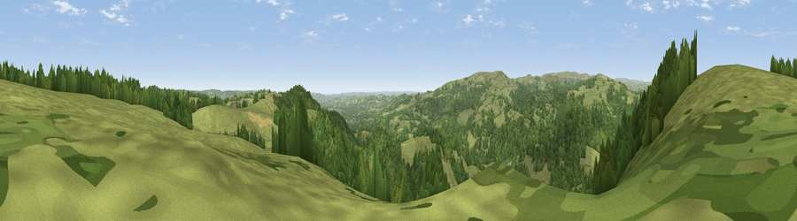

Bullaton Rock
#12180 in England · top 24% of its area beats it · near LustleighThe view, rendered

A 360° render of this exact spot computed from the terrain model, tree cover and land cover — summer colours, afternoon light, calibrated against photographs of famous viewpoints. Real trees, hedges and buildings will differ in detail.
The panorama
Grey silhouette: terrain skyline in each direction (720 bearings, Earth curvature and refraction included). Dashed green: skyline with trees (+15 m) and buildings (+8 m) as obstacles. Blue strip: how far the ground is visible on each bearing.
Where the view opens
Wedge length = distance to the farthest visible ground on that bearing (vegetation-aware). Rings at 10, 25 and 50 km.
What fills the view
61% woodland · 38% grassland ·
Angular shares of the visible panorama (visual magnitude), not map area. Landscape diversity 0.31 (0–1 Shannon).
Key numbers
More beautiful places nearby
The staircase of upgrades: each row has a higher view potential than everything closer. Driving times are estimates from straight-line distance, calibrated against real road routing — check an actual route before setting out.
| Place | Direction | Drive | Score |
|---|---|---|---|
| Shaptor Rock | SE · 2 km | ~5 min | 71.0 |
| Cairn | SW · 5 km | ~10 min | 79.8 |
| Viewpoint near Haytor Vale | SSW · 5 km | ~11 min | 80.1 |
| Viewpoint near Buckland in the Moor | SSW · 11 km | ~21 min | 80.7 |
| Viewpoint near Kenton | E · 13 km | ~24 min | 82.9 |
| Viewpoint near Holcombe | ESE · 16 km | ~28 min | 83.3 |
| Viewpoint near Shaldon | SE · 18 km | ~30 min | 83.8 |
| Viewpoint near Stokeinteignhead | SE · 18 km | ~31 min | 84.1 |
50.62681, -3.70323 · source: osm peak · position refined by local search. Computed location — check access rights before visiting.